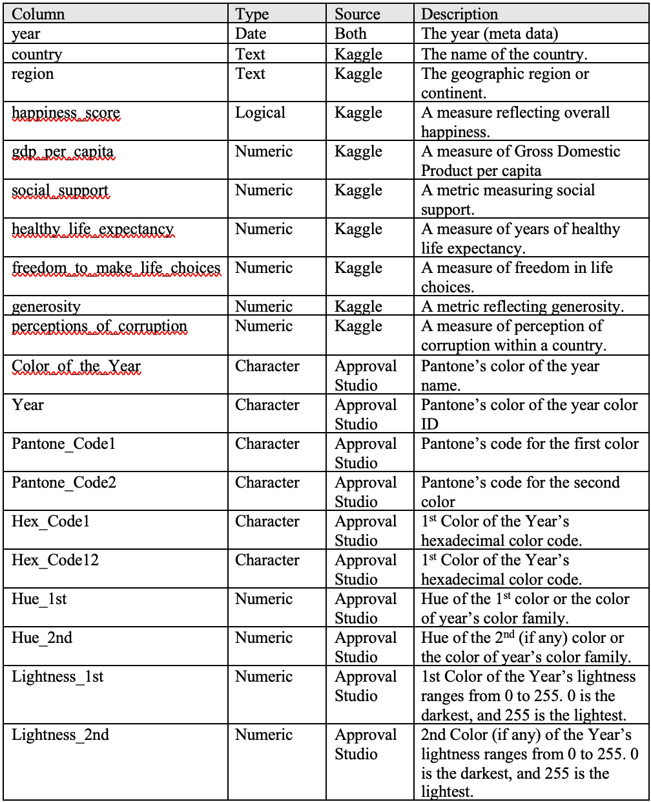
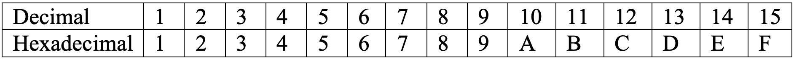
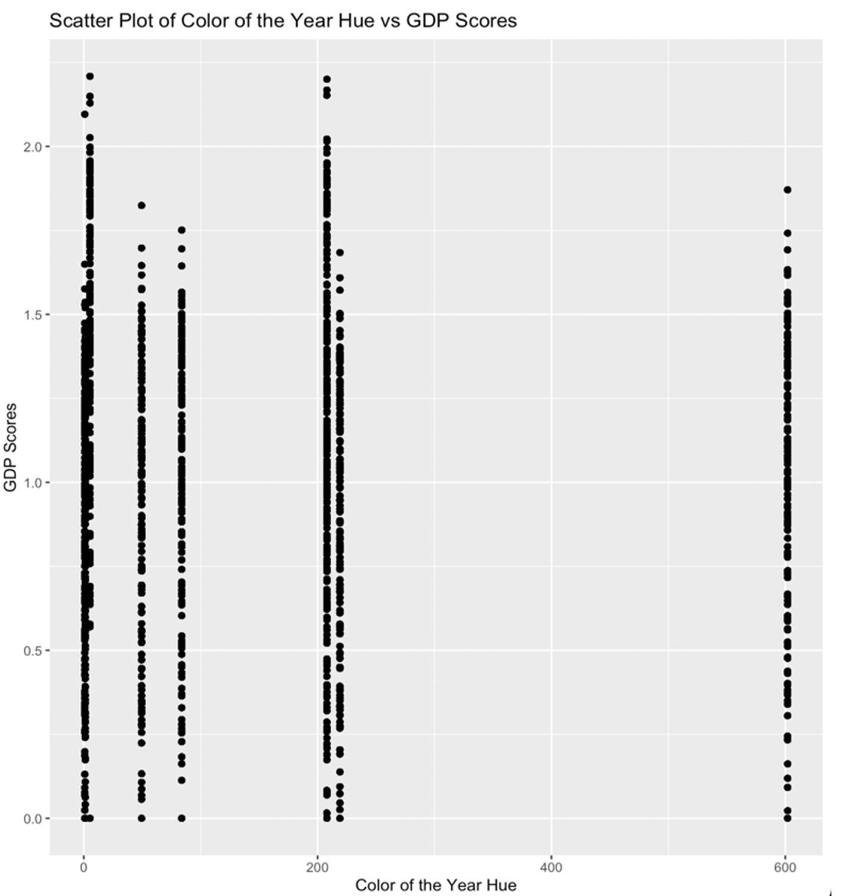
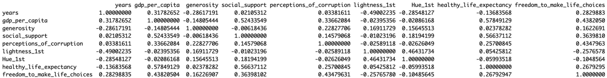
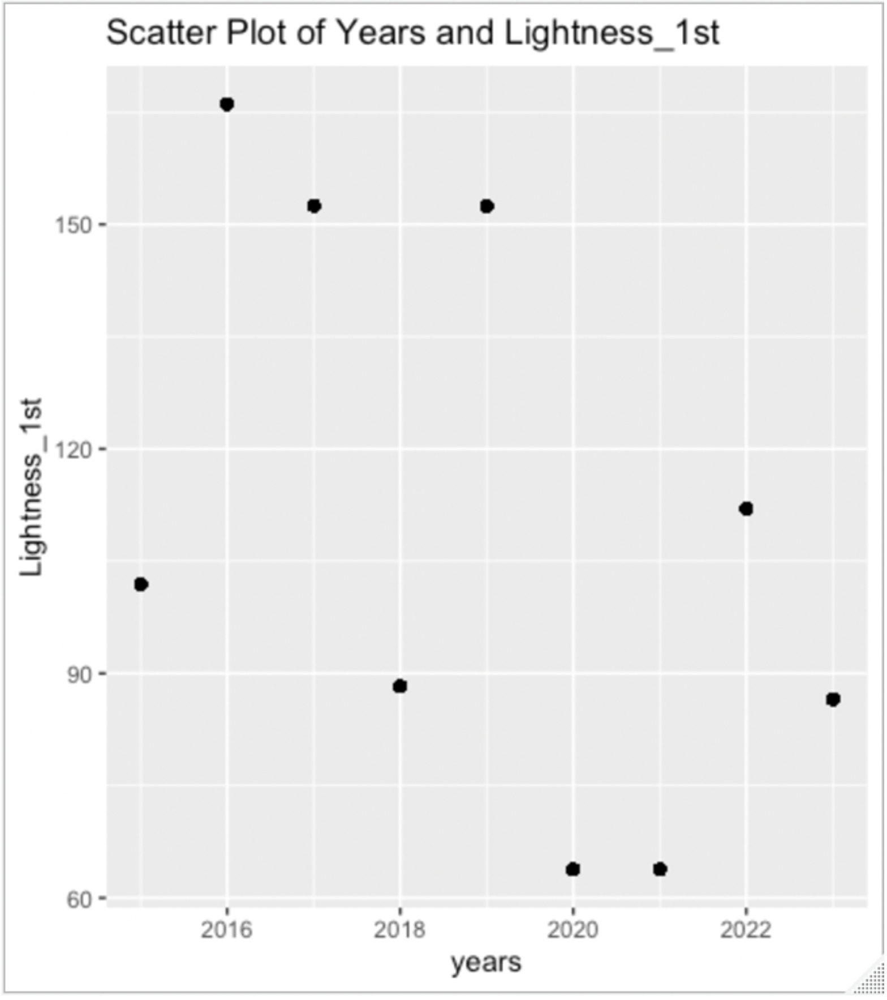

Data Wrangling Project: Pantone’s Color of the Year vs. Global Happiness Scale
1. Introduction
In the world of design and fashion, what are your predictions for Pantone's 2024 Color of the Year? Pantone is renowned for its annual tradition of unveiling the Color of the Year. While Viva Magenta 18-1750 #BB2649 takes the spotlight for 2023, let's take a leap into the future and predict Pantone's Color of the Year for 2024 ahead of their official announcement. In this project, I intend to utilize Kaggle's2 “World Happiness Report up to 2023” data to investigate how factors such as a country's happiness score, GDP per capita, freedom, generosity, perception of corruption, and many more data of the previous year may correlate with Pantone's color choice for the upcoming year.
2. Data
This project uses two primary sources of data: Approval Studio's1 article titled "Every Pantone Color of the Year in Color Palettes" up to 2023, and Kaggle2's 'World Happiness Report up to 2023', which contains data from 158 different countries dating back to 2015.
2.1 Pantone Color of the Year
I intend to begin my project by utilizing Approval Studio's1 article titled "Every Pantone Color of the Year in Color Palettes". This valuable resource contains records of Pantone's Color of the Year selections spanning from 2000 to 2023. It contains essential information, including the year of selection, the Pantone color name, the Pantone color ID, the corresponding hexadecimal color code, and a descriptive summary of each color. To gather this pertinent data from Approval Studio1, I'll be employing the R package called "xml2". This package is particularly well-suited for the precise extraction of the information I need, which is vital for my subsequent analysis and predictive work.
Before delving into any other tasks, one of the crucial steps will be to create an additional column based on the provided Hexadecimal code I scrapped. I should be able calculate RGB of the each Pantone color, then use the RGB to find the light value and hue.
2.2 World Happiness Report up to 2023
For my second dataset, I will be using Kaggle2's 'World Happiness Report up to 2023', which contains data from 158 different countries dating back to 2015. Kaggle's report is organized by year, resulting in nine separate files that I will need to merge and group by the respective years using R packages like 'dplyr' and 'tidyr'. All of these files do share the same columns, including 'country', 'region', 'happiness_score', 'gdp_per_capita', 'social_support', 'healthy_life_expectancy', 'freedom_to_make_life_choices', 'generosity', and 'perceptions_of_corruption'.
Since the Kaggle dataset only covers the period from 2015 onwards, I will focus on utilizing Studio Approval data that aligns with Kaggle's timeframe. This means I will extract data from Studio Approval for the years 2015 to 2023. The reason behind this choice is that the 'Year' attribute serves as the key for merging the two data frames. Consequently, I'll need to duplicate essential fields such as 'color_of_the_year', 'color_id', 'hexadecimal_code', 'hue', 'light_value', and 'color_description' for each of the 158 different countries, spanning across every year in the specified range.
2.3 Collecting, Cleaning, Transformation, and Combining Pantone Color of the Year and World Happiness Report up to 2023
With the necessary sources at my disposal for analysis, the next step involves determining how to compile all required data. In instances where the information isn't readily available in a prepared dataset, I will leverage Rscript tools to seamlessly combine diverse datasets into a comprehensive and cohesive unit. Moreover, it is crucial to merge this synthesized dataset with the existing second dataset, thereby equipping me with the comprehensive dataset necessary for addressing subsequent inquiries.
Web Scraping and Data Extraction: Utilizing a web scraping script, I collected pertinent information regarding Pantone Colors of the Year from a designated website. Extracted details encompassed the respective year, color names, Pantone codes, and hex codes.
Data Cleaning and Transformation: To ensure optimal analysis readiness, the extracted data underwent meticulous cleaning and transformation. Employing string manipulation functions, I replaced characters and strategically split columns to enhance their representational clarity. Subsequently, the refined dataset was exported to a CSV file denominated as "color_df.cvs."
Combining All World Happiness Reports: Acquisition of individual World Happiness Reports for each year within the 2015-2023 timeframe was conducted, with subsequent organization into distinct data frames. A supplemental column depicting the respective year was incorporated into each data frame. Vertically combining these data frames resulted in the establishment of a unified dataset titled "combined_WHR."
Merging Datasets: I have previously mentioned my intent to collect data on Approval Studio from 2015 to 2023, as I scraped. However, I find it more convenient to filter the data after the cleaning process. In the initial phase of data processing and integration efforts, the dataset, labeled final_df, representing the meticulously cleaned data of all Pantone Colors of the Year, underwent careful refinement. This process commenced with the conversion of the "Year" column into a numeric format, facilitating subsequent operations. Subsequently, I strategically filtered the dataset, excluding data prior to the year 2015.
This filtering is essential due to the Kaggle data only having reports from 2015 onwards, which is the earliest available. The necessity for a seamless merge with my other data reinforces this decision. While I would have preferred to retain historical data, the limitation lies in the extent to which my other data was recorded. The processed and filtered final_df was then exported to a CSV file named "pantone_df.cvs," serving as the foundational dataset for my subsequent analyses.
Moving forward, my focus shifted to the integration of World Happiness Reports spanning the years 2015 to 2023. Individual CSV files for each year were read into distinct data frames (WHR_2015 to WHR_2023), with an additional "years" column appended to signify the corresponding year in each data frame. To consolidate this wealth of information, I vertically combined these data frames into a unified dataset named combined_WHR. This comprehensive dataset now encapsulates happiness metrics across multiple years.
The final step involved merging the datasets based on the common "Year" column. Both the "years" column in combined_WHR and the "Year" column in final_df were converted to a numeric format for uniformity. The meticulous merging process culminated in the creation of a robust and comprehensive dataset, aptly named merged_data. This dataset seamlessly integrates information from both World Happiness Reports and Pantone color selections, laying the groundwork for in-depth analyses and insightful visualizations. The subsequent analytical endeavors will leverage this integrated dataset to uncover nuanced correlations and patterns across these diverse datasets.
Table 1 Data Dictionary
3. Analysis
3.1 Hexadecimal Code Analysis:
Background Information: I will provide any necessary extra background information for my calculations to make sense in this report.
Hexadecimal: According to App Kong4, Hexadecimal is a base-16 numbering system that helps represent large numbers with fewer digits
Table 2 Hexadecimal Table
Hexadecimal to RGB Formula: This formula was also received from App Kong5, and was used to convert the hexadecimal codes of the Pantone colors to RGB.
a. Take the hex code and divide it into pairs of two digits, representing red, green, and blue components.
b. For each pair of digits:
i. Take the decimal equivalent of the first digit.
ii. Multiply it by 16.
iii. Add the decimal equivalent of the second digit.
c. Repeat this process for each color component (red, green, and blue).
Hue: According to Changing Minds5, hues are positioned on a circular color wheel, with each assigned a degree value ranging from 0 to 360. The 360-degree circle represents the entire spectrum of visible colors. As hues progress around the wheel, colors change systematically. For example, red might be at 0 degrees, yellow at 60 degrees, and green at 120 degrees. The degree value is a key factor in selecting colors, providing a precise and systematic way to communicate and work with the vast spectrum of colors. Something to note, complementary colors are positioned 180 degrees apart on the wheel, such as red and cyan. This also means, warm and cool colors are “far ends” from each other. If the Hue values are color to 360 or 0, then it is a warm color. If the value is color to 180, then it is identified as a cool color. I will use this to compare my calculated hues to determine if the hues are warm colors or cool colors.
Normalization of RGB: To transform RGB to Hue, however, I need to find the normalized RGB. According to Changing Minds5, I first need to identify the normalized Red, Green, and Blue values (ranging from 0 to 1, typically calculated as R/255, G/255, and B/255).
Normalized RGB to Hue Formula: Changing Minds5 have explained the rest of the steps.
a. If Red = max, then Hue = 60 * ((Green - Blue) Mod 6) / (max - min))
b. If Green = max, then Hue = 60 * (2.0 + (Blue - Red) / (max - min))
c. If Blue = max, then Hue = 60 * (4.0 + (Red - Green) / (max - min))
d. If the result is zero, add 360 degrees.
Lightness Value: Based on the results, a value close to 0 denotes a very dark color, while a value near 255 signifies a very light color6
Lightness Formula: L = 0.299R + 0.587G + 0.114*B3
I am exploring a method to derive hue and lightness values from hexadecimal color codes, and the first step involved converting these hexadecimal codes into RGB values. This conversion was crucial for subsequent calculations using the L formula to determine perceived lightness. In the conducted lightness analysis utilizing R, the primary goal was to delve into and quantify the color characteristics within a dataset denoted by hexadecimal codes. The process began with the extraction and consolidation of all unique hexadecimal codes from specified columns, followed by the removal of occurrences labeled as “N/A”. Further refinement included eliminating the “#” symbol from the hexadecimal codes. To deepen the color analysis, a manual conversion of these hexadecimal codes into RGB values ensued, with each RGB set comprising Red (R), Green (G), and Blue (B) components. Normalization of these RGB values involved dividing each component by 255, forming the foundation for subsequent calculations of hue (H). To complement the exploration of hue, the analysis expanded to include the calculation of lightness values. A specialized function was developed to compute lightness without normalization, showcasing the perceived brightness of each color. The ensuing results, presented for each RGB set, offered valuable insights into the brightness characteristics of the colors, completing a multifaceted analysis of hue and lightness attributes within the dataset.
Before I draw my conclusion, there was a slight limitation in my R script where I retrieved the hue for RGB_6 (2022) as 602, which did not make much sense because the hue range is limited to 0-360°, 360° being the highest value. Due to time constraints and to avoid making the formula too complicated, I looked up the hue value of the color of the year for 2022, which was 345.9°6. However, the rest of my hues I calculated are accurate.
In conclusion, the Color of the Year for 2019 is the warmest color with a value of 5.32° (if value closest to 360° or 0°), while the 2016’s second Color of the Year (Year 2016 had two) is the coolest color with a value of 83.76° (closest to 180°). On the other hand, 2023 has the lightest luminosity with a value of 209.74, while both 2020 and 2021 tied with the darkest luminosity of 63.8.
3.2 Correlation Analysis:
I explored the relationship between the "Color of the Year Hue" (Hue_1st)and "GDP Scores" (gdp_per_capita) using statistical analysis and visualization techniques.
I used the cor function in R to calculate the correlation coefficient between the two variables. Additionally, a scatter plot was generated using the ‘ggplot2’ package to visually assess the relationship.
The correlation coefficient between "Color of the Year Hue" and "GDP Scores" was calculated to be ‘cor_hue_gdp’. This coefficient indicates the strength and direction of the linear relationship between the two variables. However, correlation coefficient of -0.0222614 is very close to zero, indicating a very weak and nearly negligible linear relationship between the two variables being analyzed. The negative sign suggests a slight negative correlation, but the strength of this correlation is so close to zero that it can be considered practically negligible. I can assume that Pantone did not based off their Color of the Years off of GDP.
The scatter plots visually confirm the absence of a discernible linear trend between the Color of the Year Hue and increasing GDP scores. The distribution of points does not exhibit any clear pattern of systematic change in hue corresponding to variations in GDP scores. This aligns with the computed correlation coefficient of -0.0222614, indicating a very weak and practically negligible linear relationship between the two variables. Overall, the evidence suggests that changes in the Color of the Year Hue are not associated with consistent and linear fluctuations in GDP scores.
Figure 1
Then, I continue to investigate the correlations between various factors from the World Happiness Report and Pantone's Color of the Year. The goal is to identify any meaningful relationships between these variables.
The correlation matrix below displays the correlation coefficients between different factors:
Table 3 Correlation Matrix Table
In my continued investigation involving the “World Happiness Report” and the “Color of the Year” dataset, a significant negative correlation caught my attention within the matrix—specifically between “years” and “lightness_1st”. This correlation, with a moderate coefficient of '-0.49002235,' unveils a consistent trend over the years. The findings indicate a pronounced shift towards the preference for lighter colors in the Color of the Year selection.
This observation prompts an intriguing assumption: as the years progress, Pantone appears to lean towards the choice of darker colors. Consequently, one might speculate that in the year 2024, I can anticipate a Color of the Year selection with relatively darker hues. This inference adds a dynamic layer to my understanding of the evolving color preferences over time.
To visualize this correlation, I made a scatter plot below:
Figure 2
4. Conclusion
In this analysis, I investigated two key dimensions of the Color of the Year dataset: the derivation of hue and lightness values from hexadecimal color codes and the correlation between Pantone's Color of the Year and various factors from the World Happiness Report.
1. Derivation of Hue and Lightness
Hexadecimal Code Analysis: Explored the hexadecimal representation and conversion to RGB values. Established a systematic method for calculating hue, considering its importance in color communication. Introduced the concept of lightness values and the formula for their computation.
Normalization and Further Analysis: Normalized RGB values for subsequent calculations. I developed a function for lightness computation without normalization. Conducted a multifaceted analysis, presenting insights into hue and lightness attributes within the dataset.
2. Correlation Analysis:
Color of the Year and GDP Scores: I explored the correlation between the Color of the Year Hue and GDP Scores. Calculated the correlation coefficient and presented a scatter plot for visual assessment. Concluded that the observed correlation is practically negligible, suggesting independence from GDP fluctuations.
Continued Investigation: Extended the analysis to correlations between various World Happiness Report factors and Color of the Year. Highlighted a significant negative correlation between "years" and "lightness_1st."
In summary, my analysis thoroughly delved into the dataset's color characteristics, offering some insights into the evolving trends in Pantone's Color of the Year choices. The correlation analysis deepened my understanding of how color selection is intertwined with external factors. These findings provide valuable insights into the intricate dynamics of color preferences and pave the way for more in-depth exploration in future analyses.
5. Limitations
Despite the comprehensive exploration, certain limitations emerged during this project. Notably, I was disappointment when a substantial number of color choices in the Color of the Year dataset displayed no correlations with external factors from the World Happiness Reports. While my initial hypothesis aimed to establish correlations, particularly between GDP and color attributes like hue or lightness derived from hexadecimal codes, the data did not align with these expectations. I simply believe that Pantone did not use the World Happiness Report directly for inspiration. Instead, they likely drew inspiration from other sources that still not yet been shared with the public.
However, even in the face of these limitations, there remains potential value in the color analysis conducted. By documenting the process of calculating hues and lightness from hexadecimal codes, this project provides a foundation for understanding the relationships embedded in color choices. While the anticipated correlations were not realized, the methodology and insights gained can be beneficial to others interested in deciphering the intricate connections between hexadecimal codes and color characteristics. This analysis serves as a steppingstone for further exploration, encouraging future researchers to build upon this work and potentially unveil deeper insights into the world of color preferences.